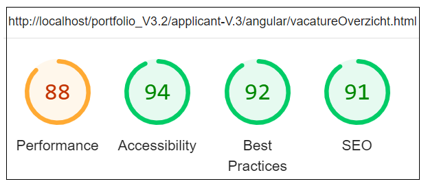
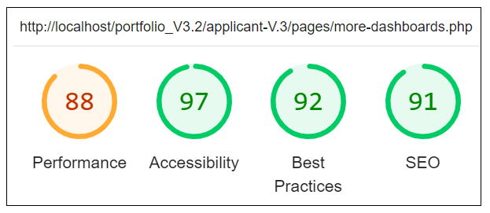
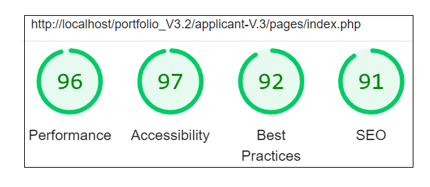
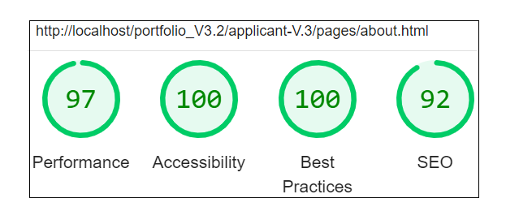

Op deze pagina leest u de technische informatie over de vacature website.
Tijdens het bouwen van een website, test ik altijd of de code voldoet aan vooral drie belangrijke onderdelen, namelijk accessibility, best practices en SEO. Zodoende kan de kwaliteit van een website gewaarborgd worden, zodat de verbeteringen doorgevoerd kunnen worden. Deze test is uitgevoerd voor mobile versie.
Hieronder zijn de testresultaten afgebeeld van de pagina's:
Afbeelding 1 : vacatureOverzicht.html
Afbeelding 2 : more-dashboards.php
Afbeelding 3 : index.php
Afbeelding 4 : about.html
